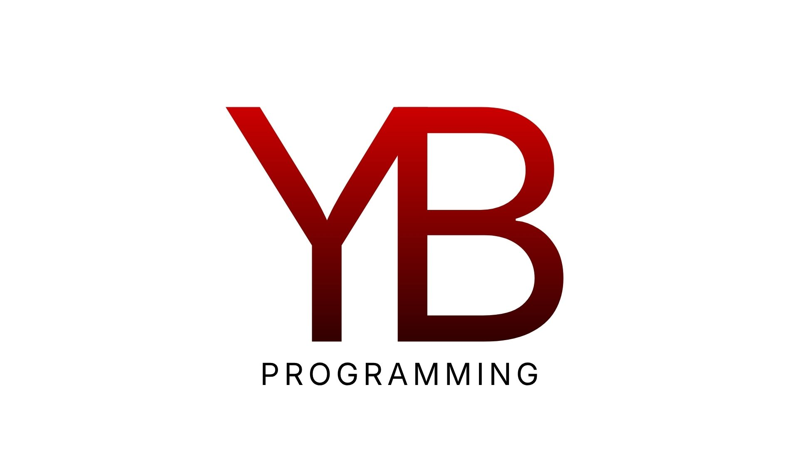

YB Programming

YB Programming es una organización que ofrece servicios de
programación brindando el mayor nivel de calidad y confianza de que
superaremos cualquier obstáculo o desafío, dispuestos a crear
cualquier idea sin importar lo difícil o imposible que parezca.
Misión
Superar los desafíos y obstáculos en el camino de crear, innovar y
programar el futuro de la tecnología con confianza y resiliencia.
Visión
Ser los elegidos para cumplir con la misión de crear, innovar y
programar el futuro de la tecnología a nivel global con enfoque en
mejora continua y superando lo que parezca imposible.
Valores
Confianza • Resiliencia • Esfuerzo
Programming
YB Programming utiliza tecnologías y frameworks de desarrollo de
actualidad, empleando un enfoque DevOps bien definido para construir
software seguro, eficaz y personalizado. Nuestro equipo de
desarrollo posee amplios conocimientos tecnológicos y está
totalmente capacitado para desarrollar y gestionar proyectos de
diversa complejidad con la máxima eficiencia y calidad.
Desarrollo de Software
Creación de aplicaciones personalizadas para optimizar procesos
específicos de una empresa. Diseño, programación, prueba y
mantenimiento de aplicaciones o sistemas informáticos para cumplir
objetivos específicos abarcando todo el ciclo de vida, desde la
conceptualización hasta el despliegue, utilizando lenguajes de
programación para crear soluciones seguras y escalables.
Desarrollo Web
Creación de sitios web funcionales, e-commerce y aplicaciones
complejas. Con enfoque en la interfaz y la experiencia de usuario,
gestionando la lógica interna, bases de datos y la conexión entre el
servidor y el usuario.
Desarrollo de Aplicaciones Móviles
Creación de apps nativas o híbridas desde su diseño, construcción,
prueba y lanzamiento para dispositivos móviles, abarcando fases de
estrategia, diseño UX/UI, programación y mantenimiento.
Ciencia de Datos
Implementación de machine learning y análisis de datos combinando
matemáticas, estadística, inteligencia artificial e ingeniería para
extraer conocimientos significativos de grandes volúmenes de datos
estructurados y no estructurados con el objetivo de analizar
patrones para apoyar la toma de decisiones, predecir resultados
futuros y optimizar procesos empresariales.
Ciberseguridad
Protección de sistemas, redes, datos y dispositivos conectados
contra amenazas digitales, ofreciendo evaluación de riesgos,
prevención, detección y respuesta a incidentes.
Mantenimiento
Actualizaciones, corrección de errores y mejora continua del
software.
Projects
Data Vault
Data Vault es el almacenamiento de datos mas seguro del mundo. Es
una organización que se encarga de almacenar y proteger datos,
priorizando la seguridad de los datos con un enfoque en la
disponibilidad y privacidad.
Innovatech
Innovatech es una empresa especializada en la prestación de
servicios integrales de diseño gráfico, desarrollo web, desarrollo
de aplicaciones móviles y de escritorio, y asesoría tecnológica
estratégica. Su enfoque está centrado en optimizar la eficiencia
operativa y fortalecer la competitividad de empresas y
emprendedores, mediante herramientas tecnológicas modernas,
funcionales y adaptadas a las necesidades del mercado actual.
Interes Plus
Interes Plus es una herramienta que utiliza fórmulas de ingeniería
económica para calcular el cual interés generado de inversiones en
un plazo determinado.